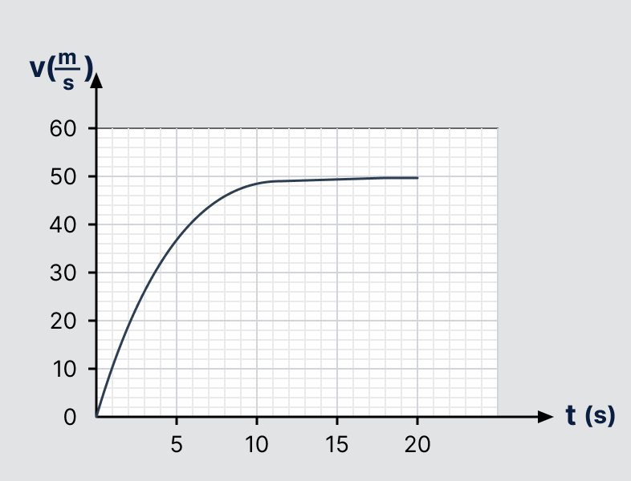

גוף שמסתו 80 ק"ג נופל מגג בניין גבוה. גודלו של כוח החיכוך עם האוויר תלוי במהירות הגוף ונתון על ידי המשוואה F = Kv2.
K הוא קבוע אשר תלוי בצורת הגוף בלבד, ואינו תלוי במהירותו או במסתו. בכל סעיפי השאלה יש להניח שערכו של K זהה.
א.
מהן יחידות המידה של K? הסבירו!
הביעו אותן באמצעות היחידות הבסיסיות (kg,m,s) בלבד. (4 נק')
הביעו אותן באמצעות היחידות הבסיסיות (kg,m,s) בלבד. (4 נק')
לפניכם גרף המתאר את מהירות הגוף כתלות בזמן

ב.
הראו כי בקטע הזמן 0s<t<1s הגוף נע בקירוב בנפילה חופשית. (5 נק')
ג.
הסבירו כיצד הייתם מחשבים את המרחק האנכי שעובר הגוף עד t=20s בעזרת הגרף.
העריכו מהגרף את המרחק הזה. (3.33 נק')
העריכו מהגרף את המרחק הזה. (3.33 נק')
ד.
הסבירו באמצעות סרטוט כוחות מתאים מדוע התאוצה של הגוף קטנה ככל שמהירותו גדלה, עד למצב שהגוף נע במהירות קבועה. (9 נק')
ה.
חשבו את ערכו של המקדם K (ביחידות המידה שקבעתם בסעיף א') (6 נק')
ו.
חוזרים על הניסוי עם גוף בעל צורה זהה שמסתו 40 ק"ג. לאיזו מהירות קבועה יגיע גוף זה? (6 נק')